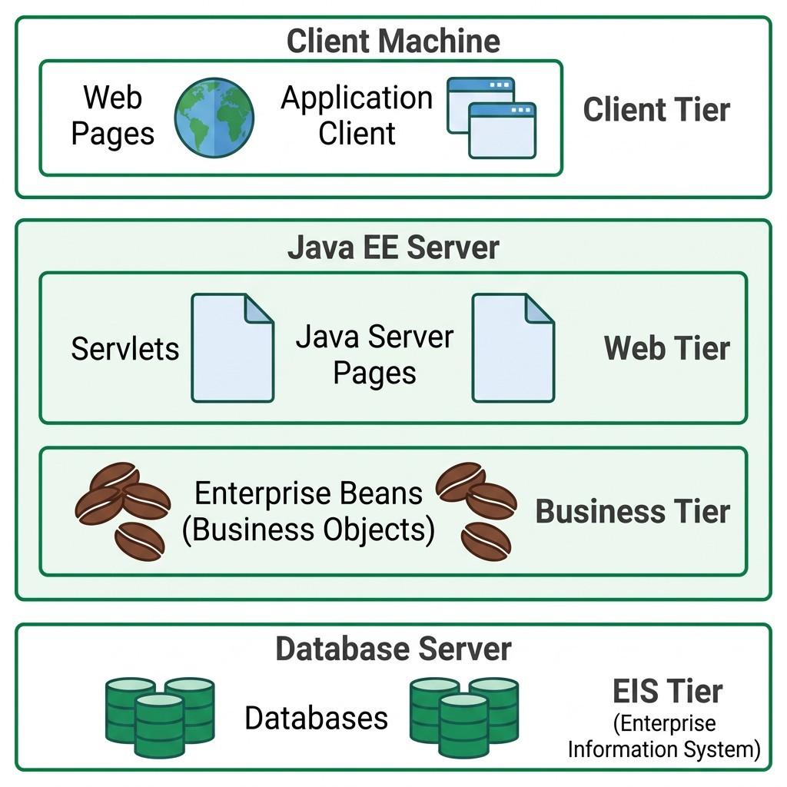
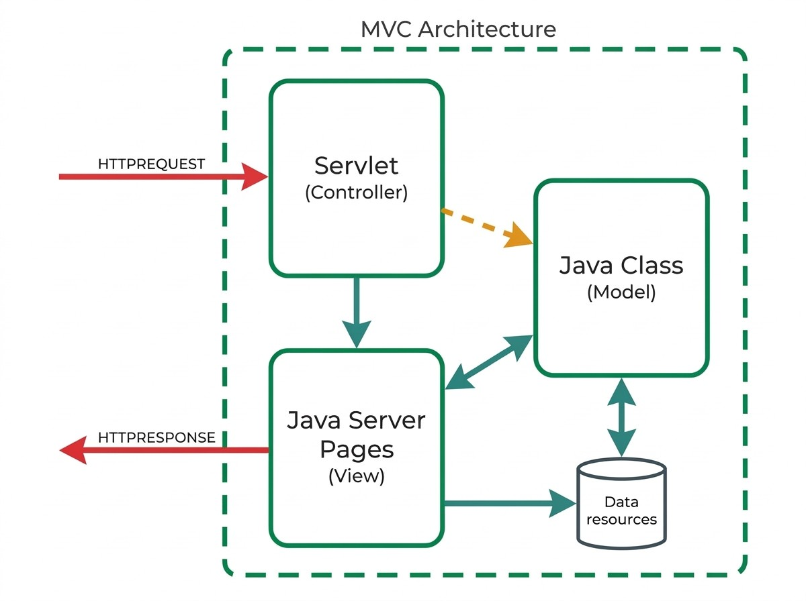

4 Java EE e Fundamentos de Servlets
4.1 A Plataforma Jakarta EE
Com o Frontend construído (Capítulo 2) e o Middleware detalhado (Capítulo 3), falta a terceira peça identificada no Capítulo 1: o Backend, que efetivamente recebe os pedidos HTTP e lhes responde. É o tema deste capítulo e dos seguintes.
A Jakarta EE (anteriormente conhecida como Java EE, até ser renomeada em 2019) é uma plataforma que fornece um conjunto de serviços e APIs prontos a usar para lidar com os problemas comuns a qualquer aplicação Web (ver Capítulo 1), libertando quem desenvolve para se concentrar na lógica de negócio da aplicação.
A plataforma assenta na linguagem Java e na Java Virtual Machine (JVM), o que significa que qualquer componente escrito para Jakarta EE beneficia da portabilidade e da gestão automática de memória já conhecidas da linguagem.
4.2 Arquitetura em Camadas
A plataforma Jakarta EE organiza uma aplicação segundo um modelo distribuído em várias camadas (tiers), cada uma com uma função bem definida e instalada, tipicamente, em máquinas diferentes:
| Camada | Onde reside | Componentes típicos |
|---|---|---|
| Client Tier | Máquina do cliente | Páginas Web (browser), aplicações cliente |
| Web Tier | Servidor Jakarta EE | Servlets, JavaServer Pages, Web Services |
| Business Tier | Servidor Jakarta EE | Enterprise Beans (lógica de negócio) |
| EIS Tier (Enterprise Information System) | Servidor de base de dados | Bases de dados, sistemas de informação empresarial |
Esta separação por camadas permite que cada componente evolua de forma relativamente independente das restantes: alterar a base de dados não obriga a reescrever a lógica de negócio, e alterar a interface do cliente não obriga a alterar o servidor.

O Apache Tomcat, usado ao longo desta UC, é um Servlet Container: implementa apenas a Web Tier (Servlets, JSP). Não inclui suporte para Enterprise Beans nem para a Business Tier propriamente dita, ao contrário de um servidor de aplicações Jakarta EE completo (por exemplo, WildFly, WebSphere ou GlassFish). Na prática, isto significa que a lógica de negócio que, na arquitetura formal, pertenceria à Business Tier, é implementada aqui diretamente em classes Java comuns, e não em Enterprise Beans.
4.3 Porquê Servlets?
Implementar, de raiz, um programa Java capaz de responder a pedidos HTTP obrigaria a resolver, sozinho, um conjunto de problemas comuns a qualquer servidor Web: interpretar a mensagem HTTP recebida, gerir várias ligações em simultâneo (cada uma num thread próprio), controlar o ciclo de vida das instâncias em memória, e empacotar tudo isto num formato que um servidor de aplicações saiba instalar e arrancar.
Uma Servlet é uma classe Java que corre dentro de um Servlet Container (por exemplo, o Apache Tomcat) e que recebe, automaticamente, todo este trabalho já feito:
- Interpretação (parsing) do pedido HTTP
- Gestão de threads, uma por pedido
- Gestão do ciclo de vida da própria Servlet
- Um modelo de implantação (deployment) próprio, empacotado num ficheiro
.war(Web Application Archive)
O Servlet Container corresponde, na arquitetura em camadas apresentada acima, à Web Tier: é aí que as Servlets residem, entre o cliente e a camada de negócio.

4.4 O Ciclo de Vida de uma Servlet
Quando um pedido é encaminhado para uma Servlet, o contentor segue sempre a mesma sequência (ver Figura 4.3 ):
- Se ainda não existir uma instância dessa Servlet em memória, o contentor carrega a classe, cria uma instância e chama o método
init() - Para cada pedido recebido, o contentor invoca o método
service(), que despacha paradoGet(),doPost(), ou outro método consoante o verbo HTTP usado, passando-lhe os objetosrequesteresponse - Se o contentor precisar de remover a Servlet (por exemplo, ao desligar o servidor), invoca o método
destroy()
Um pormenor importante decorre daqui: existe uma única instância de cada Servlet em memória, mesmo que existam N clientes a usar o mesmo serviço em simultâneo. Cada pedido é atendido por um thread diferente, mas todos esses threads partilham a mesma instância. Na prática, isto significa:
Nunca guardar dados de um pedido específico em atributos de instância da Servlet: como a instância é partilhada por todos os threads, um pedido pode ler ou sobrescrever dados de outro pedido em curso. Variáveis locais, declaradas dentro de doGet() ou doPost(), são seguras, porque cada thread tem a sua própria cópia.

service() sobre essa mesma instância partilhada.
4.5 Da Mensagem HTTP ao Método Java
Uma Servlet liga-se a uma URL através da anotação @WebServlet, que faz o mapeamento entre um caminho e a classe que o vai tratar:
Um pedido de um cliente a http://localhost:8080/country é assim encaminhado para a classe CountryServlet. O contentor constrói automaticamente, a partir dos elementos da mensagem HTTP recebida (ver Capítulo 3 (cap03.qmd)), o objeto request; o objeto response, complementar, é o que a Servlet usa para construir a mensagem de saída. Os elementos de cada mensagem correspondem a métodos concretos destes dois objetos:
| Elemento HTTP | Acesso em Java | Quando se usa |
|---|---|---|
| Cabeçalhos do pedido | request.getHeader(nome) |
Sempre, qualquer que seja o tipo de pedido |
Parâmetros (query string de um GET, ou corpo application/x-www-form-urlencoded de um POST) |
request.getParameter(nome) |
Formulários HTML tradicionais (ver Capítulo 2), numa aplicação orientada à apresentação |
| Corpo do pedido em bruto (tipicamente JSON) | request.getInputStream() |
Web services REST (ver Capítulo 7): o corpo não vem no formato application/x-www-form-urlencoded, por isso getParameter() não o interpreta, e é preciso ler e interpretar o JSON manualmente |
| Escrever a resposta | response.getWriter() ou response.getOutputStream() |
Sempre, qualquer que seja o tipo de resposta |
protected void doGet(HttpServletRequest request, HttpServletResponse response) {
String countryCode = request.getParameter("countrycode");
// ...
}
HttpServletRequest, é processado pelo componente Web (a Servlet), que pode usar outra servlet, ou consultar recursos de dados, e a resposta sai encapsulada num HttpServletResponse.
4.6 Content-Type e a Forma da Resposta
Antes de escrever qualquer coisa na resposta, é essencial definir o seu Content-Type: é este cabeçalho que diz ao cliente como deve interpretar os bytes que se seguem, seja como página HTML, seja como dados JSON.
No caso de uma aplicação orientada à apresentação:
response.setContentType("text/html");
PrintWriter out = response.getWriter();
out.println("<html><body>");
out.println("<h1>Hello João</h1>");
out.println("</body></html>");No caso de uma apresentaçao orientada ao serviço:
response.setContentType("application/json");
PrintWriter out = response.getWriter();
out.print("{\"name\":\"João\",\"role\":\"admin\"}");Na ausência de uma biblioteca dedicada à geração de JSON, o mais direto é construir a String manualmente, tendo o cuidado de escapar as aspas internas com \":
String jsonResponse = "{\"country\": \"Portugal\", \"capital\": \"Lisboa\", \"ccode\": \"PT\"}";
out.print(jsonResponse);
out.flush();Para definir o código de estado da resposta (ver Capítulo 3), a classe HttpServletResponse disponibiliza uma constante para cada código, evitando o uso de números “mágicos” diretamente no código:
| Código HTTP | Constante Java |
|---|---|
200 |
HttpServletResponse.SC_OK |
201 |
HttpServletResponse.SC_CREATED |
400 |
HttpServletResponse.SC_BAD_REQUEST |
403 |
HttpServletResponse.SC_FORBIDDEN |
404 |
HttpServletResponse.SC_NOT_FOUND |
500 |
HttpServletResponse.SC_INTERNAL_SERVER_ERROR |
4.7 Uma Primeira Servlet: “World Capitals”
Aplicando o que foi apresentado, uma primeira Servlet pode servir como simples verificação de estado (health check) da API:
@WebServlet("/status")
public class StatusServlet extends HttpServlet {
protected void doGet(HttpServletRequest request, HttpServletResponse response)
throws ServletException, IOException {
response.setContentType("text/plain");
PrintWriter out = response.getWriter();
out.print("OK");
}
}E um segundo, já a devolver dados fixos em formato JSON, é o primeiro passo da aplicação “World Capitals” usada ao longo desta UC:
@WebServlet("/countrycapital")
public class CountryCapitalServlet extends HttpServlet {
protected void doGet(HttpServletRequest request, HttpServletResponse response)
throws ServletException, IOException {
response.setContentType("application/json");
PrintWriter out = response.getWriter();
String jsonResponse = "{\"country\": \"Portugal\", \"capital\": \"Lisboa\", \"ccode\": \"PT\"}";
out.print(jsonResponse);
out.flush();
}
}Esta Servlet devolve sempre o mesmo país, com os dados fixos diretamente no código — uma simplificação deliberada nesta fase introdutória. Numa aplicação real, esses dados viriam antes de um objeto dedicado ao acesso a dados, um Data Access Object (DAO).
Um DAO não é um conceito formal da Jakarta EE nem exige nenhuma anotação ou interface especial — é apenas uma convenção comum: uma classe Java simples que isola, num único sítio, a forma como os dados são obtidos (por exemplo, findByCode(code) ou validateUserCredentials(user, pass)), escondendo do resto do código se, por trás desses métodos, está uma lista fixa em memória, uma base de dados, ou outra fonte qualquer.
4.8 Servlets e o Padrão MVC: Falta a View
A matéria deste curso centra-se mais nas aplicações de serviços web, pelo que as Servlets apresentadas devolvem sempre JSON: sendo orientadas a serviço, não têm, de facto, nenhuma View (ver Capítulo 1). Tal facto não significa que a aplicação não possa alimentar uma vista gráfica; neste caso usa-se o modelo MVC em que a Servlet faz de Controller e alimenta uma página web indiretamente através de JSON. Essa página web é naturalmente construída em HTML, mas tem que ter uma lógica de script que extraia do JSON os dados necessários para os colocar nos locais adequados da página HTML (ver Capítulo 8).
Se a aplicação for, de raiz, orientada à apresentação, porém, a mesma Servlet que funciona como Controller pode gerar diretamente o HTML da página (da View) ou pode ainda delegar essa responsabilidade a uma página dedicada, usando uma tecnologia conhecida como JSP (JavaServer Pages) mantendo a separação de responsabilidades do MVC, como se pode observar na Figura 4.5.

Essa página dedicada, a JavaServer Page (JSP), é abordada em detalhe no Capítulo 5.